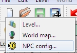
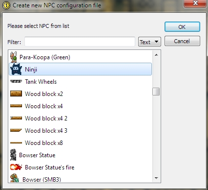
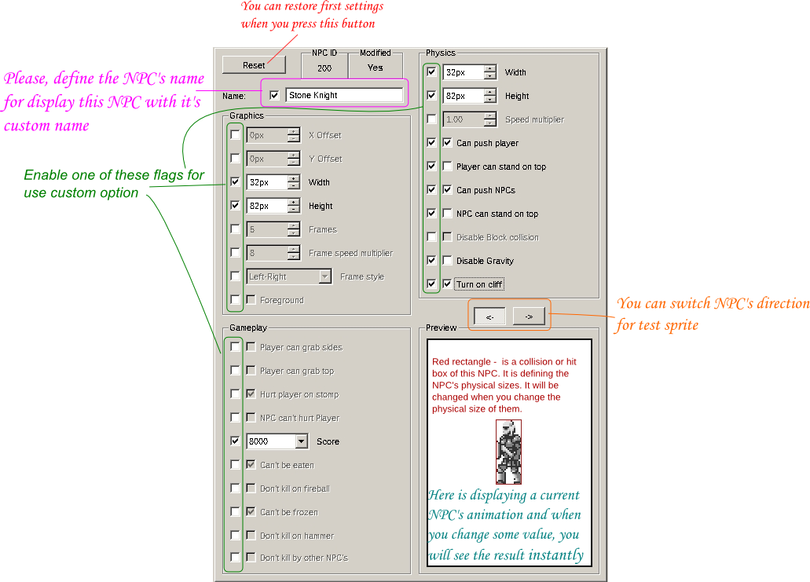

The Editor have own powerful NPC editor which can emulate the NPC in a real time which helps you with configuring and debugging process.
Each NPC config basing on the global configuration and using for customize already configured NPC.
Selecting "New" NPC Config

Selecting NPC base for your config

NPC Editor workspace

Copyright © 2014-2015 Platformer Game Engine by Wohlstand project. All rights reserved.